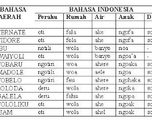
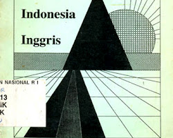
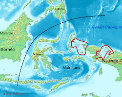

Bahasa Ternate
Bahasa Ternate adalah bahasa yang dituturkan oleh masyarakat di Pulau Ternate dan sekitarnya. Bahasa ini memiliki pengaruh dari bahasa Arab dan Portugis.

Bahasa Tidore
Bahasa Tidore adalah bahasa yang dituturkan oleh masyarakat di Pulau Tidore dan sekitarnya. Bahasa ini memiliki pengaruh dari bahasa Arab dan Spanyol.

Bahasa Halmahera
Bahasa Halmahera adalah bahasa yang dituturkan oleh masyarakat di Pulau Halmahera dan sekitarnya. Bahasa ini memiliki pengaruh dari bahasa Melayu dan Portugis.